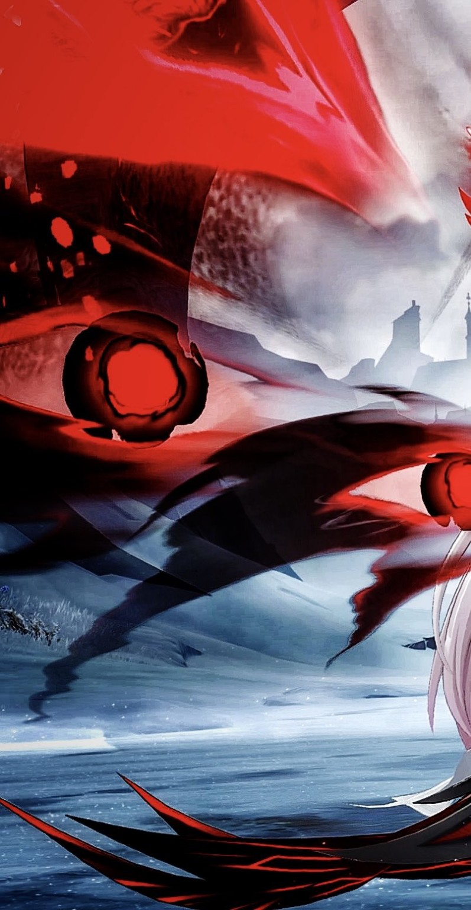
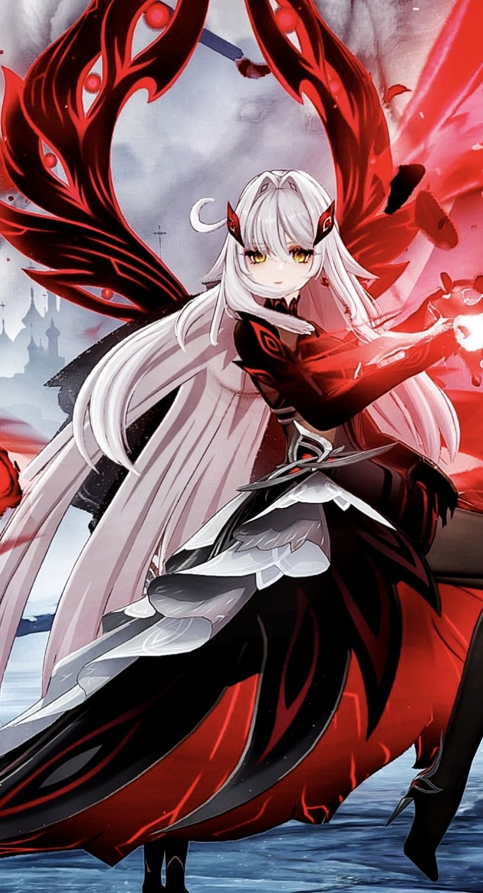
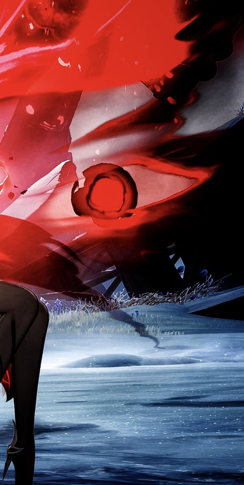

Gabriel Allen
A. Pena



IT Student | Game Developer | Sound Engineering
I'm an aspiring game developer passionate about programming, technology, and creating interactive experiences. I also have field experience and interests in sound engineering.

Ronova · The Ruler of Death
A celestial authority, an ancient pact, and the price of mortality.
Ronova is the Ruler of Death in Genshin Impact and one of the Four Shades created by the Heavenly Principles. Unlike a mortal or an Archon, her authority concerns the fundamental laws that determine death in Teyvat. She is closely associated with Celestia and with an ancient order of powers that existed long before the current Seven Archons. Her place in the story makes her more than a symbol of destruction: the consequences of her authority reach across nations, generations, and the boundaries between life and death.
Her influence is especially important to Natlan. After that land's Ley Lines suffered catastrophic damage, Ronova guided Yohualtecuhtin, the Lord of the Night, in establishing the Night Kingdom. This extraordinary realm became a substitute network for souls and memories. Ronova's assistance reflected compassion for the people of Natlan, but the Heavenly Principles judged her involvement to have exceeded the authority granted to a Shade. Her actions therefore reveal a central tension in her character: the difference between obeying divine restrictions and choosing to help mortal lives.
Ronova also entered into an agreement with Xbalanque, the first Pyro Archon. Through his connection to her power, Natlan developed extraordinary rules, including the Pilgrimage of the Return of the Sacred Flame and the Ode of Resurrection. These traditions allowed the nation to continue fighting the Abyss, but the power of death was never free. Its use carried a deadly price, a consequence that became crucial when the later Pyro Archon Mavuika confronted the Abyss.
Her history has a much darker side. During the cataclysm five hundred years ago, Ronova imposed the curse of immortality upon pure-blooded people of Khaenri'ah. For its victims, immortality was not a gift. They continued to endure erosion, suffering, and the loss of those around them. Il Capitano, himself connected to Khaenri'ah, later challenged the consequences of that judgment. In Natlan, his decision to merge with the Lord of the Night complicated Ronova's demand for the price of death and helped preserve the Night Kingdom.
Visually, Ronova is recognizable by her flowing white hair, crimson-and-black attire, and golden eyes with distinctive seven-petaled flower-shaped pupils. The contrast between her delicate appearance and her command over mortality is part of what makes her memorable. Her story explores duty, compassion, punishment, sacrifice, and whether even a divine ruler can act outside the limits imposed upon her.
Sources: HoYoWiki: Ronova · HoYoWiki: Night Kingdom · HoYoWiki: Il Capitano. This is a fan-created portfolio, not an official Genshin Impact website.
Code. Create. Engineer.
Game Development
Interactive concepts, game programming, and creative experimentation.
Programming
Learning and building with HTML, CSS, JavaScript, Python, Java, PHP and C++.
Sound Engineering
Exploring live audio systems, technical production and professional AV practice.